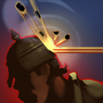
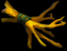
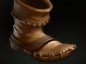
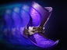
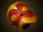

<!DOCTYPE html><html><head><meta charset="utf-8"><meta name="viewport" content="width=device-width, initial-scale=1, maximum-scale=1"><title>Presentasi | Hero Guide : Sniper</title><link rel="stylesheet" type="text/css" href="bower_components/prism/themes/prism.css"><link rel="stylesheet" type="text/css" href="bower_components/todc-bootstrap-main/dist/css/bootstrap.min.css"><link rel="stylesheet" type="text/css" href="styles/main-presentation.css"></head><body></body></html><nav role="navigation" class="navbar navbar-inverse"><div class="container"><div class="navbar-header"><button type="button" data-toggle="collapse" data-target="presentation-chooser" class="navbar-toggle"><span class="sr-only"></span><span class="icon-bar"></span><span class="icon-bar"></span><span class="icon-bar"></span></button><a href="index.html" class="navbar-brand">Presentasi</a></div><div id="presentation-chooser" class="collapse navbar-collapse"><ul class="nav navbar-nav"><li class="dropdown"><a data-toggle="dropdown" href="#" class="dropdown-toggle">Pilih Subtopik <b class="caret"></b></a><ul class="dropdown-menu"><li><a href="1Penjelasan.html">Penjelasan DotA 2 Secara Umum</a></li><li><a href="2Role.html">Role</a></li><li><a href="3Warding.html">Warding</a></li><li><a href="4Sniper.html">Hero Guide : Sniper</a></li></ul></li></ul></div></div></nav><article id="presentation"><section><h1>SNIPER</h1><p>Ranged - <strong>Carry</strong></p></section><section><h2>OVERVIEW</h2><hr></section><section><h2>BIO</h2><hr><p style="border:3px solid green;text-align:justify;font-size:18px"><Kardel>Kardel Sharpeye was born deep in the mountains of Knollen where, since time immemorial, Keen Folk have survived by hunting the strange, cliff-dwelling steepstalkers above their village, shooting them from a distance and collecting the carcasses where they fell. Sharpeye was among the best of these strange mountain keens for whom projectile weapons are but another appendage, and to shoot is as natural as to touch. On his day of summoning, when he was to gain full standing in his village, Sharpeye took the ancient test: a single shot from the valley floor to strike a beast down from the cliffs. To miss was to be dishonored. With his entire village standing vigil, Sharpeye took his shot. A steepstalker fell; the crowd cheered. But when the carcass was collected, the village grew silent, for the elders found that the bullet had pierced its glittering central eye then fallen to be clenched in the steepstalker's mandibles. This ominous sign was the literal opening of a dark prophecy, foretelling both greatness and exile for the gunman who made such a shot. Sharpeye the Sniper was thus, by his own skill, condemned to make his way apart from his people and unwelcome back among them until he has fulfilled the remainder of the prophecy by attaining legendary stature on a field of battle.</Kardel></p></section><section><h2>SKILL</h2></section><section><h2>Shrapnel (Active)</h2><p style="border:3px solid green;text-align:justify;font-size:18px">Fires a ball of shrapnel that showers the target area in explosive pellets. Enemies are subject to damage and slowed movement. Reveals the targeted area. <br>Radius : 400<br>Cast Range : 1800<br>Effect Radius : 450<br>Damage per Second : 12 / 24 / 36 / 48<br>Move Speed Slow : 15% / 20% / 25% / 30%<br>Slow Duration : 2, Shrapnel Duration : 10<br>Number of Charges : 3, Charge Restore Time : 55<br>Mana Cost : 50, Cooldown Time : 40<br></p></section><section><h2>Headshot (Passive)</h2><p style="border:3px solid green;text-align:justify;font-size:18px">Sniper increases his accuracy, giving a chance to deal extra damage and slow.<br>Slow Duration : 0.5<br>Chance : 40%<br>Move Speed Slow : 100%<br>Attack Speed Slow : 100<br>Damage Bonus : 15 / 40 / 65 / 90</p></section><section><h2>Take Aim (Passive)</h2><p style="border:3px solid green;text-align:justify;font-size:18px">Extends the attack range of Sniper's rifle.<br>Range Bonus : 100 / 200 / 300 / 400<br>Total range : {650/750/850/950}<br>Level 3 and 4 of this ability allow  Sniper to out-range towers.</p></section><section><h2>Assassinate (Active)</h2><p style="border:3px solid green;text-align:justify;font-size:18px">Sniper locks onto a target enemy unit, and after 1.7 seconds, fires a devastating shot that deals damage at long range.<br>Range : 2000 / 2500 / 3000<br>Damage : 320 / 485 / 650<br>Mana Cost : 175 / 275 / 375<br>Cooldown Time : 20 / 15 / 10</p></section><section><h2>Item Build for Noob</h2></section><section><h2>Early Item</h2></section><section><h2>Penjelasan</h2></section><section><h2>Tango</h2><p>Salah satu item healing utama yang akan dibeli oleh hero di early game agar dapat bertahan lama di lane.</p></section><section><h2>Healing Salve</h2><p>Sama seperti tango,tetapi memiliki tingkat regenerasi Hp yang lebih cepat dibandingkan dengan Tango. Dibeli di early game agar dapat bertahan lama di lane.</p></section><section><h2>Iron Branch</h2><p>Item utama untuk early game yang sangat murah, hanya 50 gold dan berfungsi untuk menambah semua status sebesar +1.</p></section><section><h2>Ring of Protection</h2><p>Disarankan untuk membeli Ring of Protection pada early game, disebabkan karena darah sniper yang sangat tipis. Menambah armor sebesar +3.</p></section><section><h2>Mid Item</h2></section><section><h2>Penjelasan</h2></section><section><h2>Ring of Basilius</h2><p style="border:3px solid green;text-align:justify;font-size:18px">Item yang penting untuk mempercepat regenerasi mana agar dapat nge-spam skill. Menambah +6 Damage, +3 Armor, dan mana regen +0,65.</p></section><section><h2>Boots of Speed</h2><p style="border:3px solid green;text-align:justify;font-size:18px">Item utama untuk seluruh hero, untuk mempercepat Movespeed. Item yang harus cepat dibeli oleh sniper yang rentan terhadap ganking, agar meningkatkan survivability sniper. +50 Movespeed</p></section><section><h2>Ring of Aquila</h2><p style="border:3px solid green;text-align:justify;font-size:18px">Upgrade dari Ring of Basilius, untuk menambah status dan juga regenerasi mana. Menambah +3 Strength, +9 Agility, +3 Intelligence, +9 Damage, +3 Armor dan mana regen +0,65.</p></section><section><h2>Phase Boots</h2><p style="border:3px solid green;text-align:justify;font-size:18px">Sepatu yang pas untuk sniper yang memiliki movespeed lambat dan juga menambah damage. Menambah +50 Movespeed +24 Damage dan jika item diaktifkan maka akan mendapat tambahan movespeed 16% dengan durasi 3,6 detik.</p></section><section><h2>Bracer</h2><p style="border:3px solid green;text-align:justify;font-size:18px">Item penambah status yang cocok untuk sniper yang memiliki HP yang sedikit. +6 Strength, +3 Agility, +3 Intelligence, +3 Damage.</p></section><section><h2>Mask of Madness</h2><p style="border:3px solid green;text-align:justify;font-size:18px">Item yang penting untuk sniper yang memiliki attack speed yang lambat, dengan item ini didukung skill Headshot akan membuat Sniper menjadi carry yang mengerikan asalkan tetap jaga jarak dengan hero lawan. Jika diaktifkan akan menambah +100 attack speed, +17% movespeed tetapi akan mendapat extra damage sebesar 30%, dengan durasi 12 detik. Dan juga lifesteal sebesar 20%.</p></section></article><script src="bower_components/bespoke.js/dist/bespoke.min.js"></script><script src="bower_components/bespoke-bullets/dist/bespoke-bullets.min.js"></script><script src="bower_components/bespoke-scale/dist/bespoke-scale.min.js"></script><script src="bower_components/bespoke-hash/dist/bespoke-hash.min.js"></script><script src="bower_components/bespoke-progress/dist/bespoke-progress.min.js"></script><script src="bower_components/bespoke-state/dist/bespoke-state.min.js"></script><script src="bower_components/prism/prism.js"></script><script src="bower_components/prism/components/prism-bash.min.js"></script><script src="scripts/main.js"></script><script src="bower_components/jquery/jquery.min.js"></script><script src="bower_components/todc-bootstrap-main/dist/js/bootstrap.min.js"></script>